牌譜解析 / 天鳳 鳳凰卓
端牌の間隔トイツ落とし
ずんだもんの間隔トイツ落とし理論を、鳳南1,800万局で検証した。
TL;DR
- 同じ端牌が間隔を空けて2回切られ、2枚目が手出しだったケースのうち、1枚目を切った時点ですでにトイツだったものは60.6%だった。間に挟まる打牌が1〜4枚で、途中にブロック落としがなければ80.8%まで上がる。
- 理論の中心的な予測に反して、内側1つ目のスジ（2–5 / 5–8）が待ちに含まれる率は、他のリーチより約20%高かった。
- 内側2つ目のスジ（3–6 / 4–7）が待ちに含まれる率は、全体では約5%、短い間隔では約9%低かった。
- 最もよく当たるのは「おまけ」の予測で、5の愚形待ちは約20%少なかった。
手出し読み
「雀ゴロのずんだもん」@M斬るチャンネルのMリーグ辛口解説の大ファンである1。中の人が誰なのかは知られていないが、動画を数本見れば、麻雀を相当よく分かっている人が作っているということはよく分かる。特に、手牌読みの深さと思考過程を説明する巧みさは群を抜いていて、福地誠先生や有名天鳳プレイヤー達だけでなく、Mリーガーの堀慎吾選手や内川幸太郎選手などの麻雀プロまでが、ずんだもんを評価するコメントを残している。動画を見つつMリーグの牌譜を再生して、ずんだもんの手牌読みがどこまで当たっているかを確認したりするのも楽しい。
だから、ずんだもんが2026年8月に「手出し読み講座」という新しいシリーズを始めてくれたのは嬉しかった。手出し読みをまったく学んだことのない初心者向けの入門講座という触れ込みであるが、かなり高度な内容までカバーしていると思う。ずんだもんの普段のMリーグ解説動画では、詳しい説明抜きで読みの理論が言及されることが多いのだが、この講座はその背後にある論理を順を追って説明してくれる。
 ずんだもんの手出し読み講座 #1
手出し読みの理論について、ずんだもんが一から解説
YouTube
ずんだもんの手出し読み講座 #1
手出し読みの理論について、ずんだもんが一から解説
YouTube
ずんだもんがMリーグ解説の時にたびたび言及してきた理論に、「端牌の間隔トイツ落とし」（端牌トイツの間隔切り）がある。たとえば第14回、第19回、第66回、第70回などに登場している。
理論の中心的な予測はこうだ。同じ端牌が間隔を空けて2回切られ、少なくとも2枚目が手出しだったとき — たとえば を4巡目と6巡目に手の中から切ったとき — その隣の2つのスジ、
を4巡目と6巡目に手の中から切ったとき — その隣の2つのスジ、 –
– と
と –
– は、普段より安全になる。
は、普段より安全になる。
ずんだもん自身が「最強の理論」と呼ぶこの理論は、とても魅力的に思えた。自分は麻雀戦術書を相当数（80冊以上）読んできたつもりだが、この理論が説明されているのを見た記憶はない。理論の導出プロセスは明瞭で、ロジックに隙がないように見えるし、その予測は攻撃・守備両方の状況で幅広く応用が利きそうだ。この理論に魅了された私は、実戦でどれくらい使えるのか — この型の捨て牌がどのくらいの頻度で現れるのか、予測に境界条件はあるのか — をデータで確かめたくなった。
天鳳の牌譜を分析した結果、残念ながらデータは理論の中心的な予測を支持しなかった。それどころか、安全になるはずのスジの一方は、基準値よりむしろ危険になるように見える。一方で、ずんだもんが「おまけの理論」として言及した予測の一つはデータに強く支持された。
データ分析の結果を示す前にまず、ずんだもんの理論の機序をスケッチしておく。以下の説明は、ずんだもんの講座 — 主に第1回と第2回、一部第6回 — をまとめて説明しているものなので、動画を見てすでに内容を分かっている読者はこの節を飛ばしてよい。ずんだもんの説明を以下にまとめ直している理由は、「私はずんだもんの理論をこう理解している」ということを明記しておくことで、別の麻雀研究者が私のデータ分析の追試をする時に、私の誤りを見つけやすくするためである。その後、理論の予測を二種類に分けて検証する。第一の検証は、端牌の間隔切りに見える捨て牌は、本物の端牌トイツがあったことを示すのかという分析だ。第二の検証は、端牌の間隔切りは本当に隣のスジを安全にするのかという分析である。
ずんだもんの手出し読み理論
定義
ずんだもんはまず、全ての手出し・ツモ切りを覚えようとするのではなく、以下の3種類の手出しがあった時だけに注目するのが良いという。それ以外のタイプの手出しはシグナルとして使うにはノイズが多すぎるし、3人の相手の手出しをすべて覚えようとするのは、脳のリソースの無駄遣いだという。
1. 逆切り
- 3〜7の牌を切ったあとで、いずれかの色の1・2・8・9を手出しする。
- あるいは、2か8を切ったあとで、いずれかの色の1か9を手出しする。
- 例：3巡目に
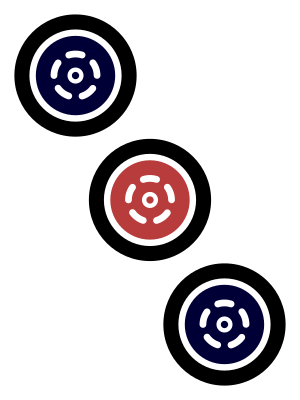
を切り、後に を手出しする。
を手出しする。
2. ターツの間隔切り
- t 巡目に数牌を切り、t + 2巡目以降に、その牌とターツを構成する牌を手出しする。
- 例：3巡目に
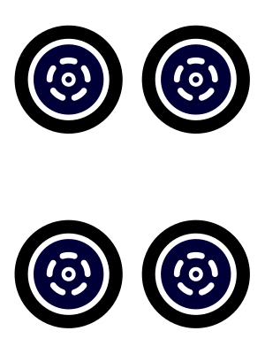
を切り、5巡目に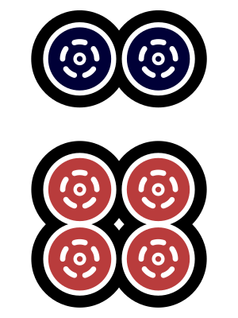
を手出しする。 - 注：以下、「間隔」は同じプレイヤーの二つの打牌の間に挟まる打牌枚数を指す。たとえば4巡目と6巡目に切った場合、間隔は1枚と数える。
3. トイツの間隔切り
- t 巡目に数牌を切り、t + 2巡目以降に、同じ牌をもう1枚手出しする。
- 例：3巡目に
 を切り、5巡目にもう1枚のを手出しする。
を切り、5巡目にもう1枚のを手出しする。
この3つが重要である理由は、あとから手出しされた牌が孤立牌として手牌に残されていた可能性が低いという共通点があることだ。普通の手 — 国士無双や七対子、染め手を狙っていない手 — において、孤立した
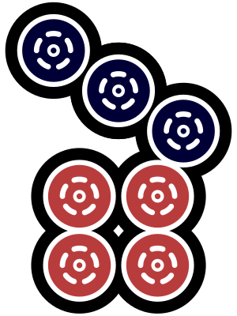
より孤立したを残したり、 を切ったあとに孤立したを残したりは、普通しない。これらの例でやが数巡のあいだ手牌に残されていたのであれば、それは孤立牌ではなく周りの牌とつながっていた可能性が高い。
を切ったあとに孤立したを残したりは、普通しない。これらの例でやが数巡のあいだ手牌に残されていたのであれば、それは孤立牌ではなく周りの牌とつながっていた可能性が高い。
それ以外の手出しの多くは、切られた牌が孤立していることもあれば、つながっていることもあるため、情報の信頼度が落ちる。たとえば
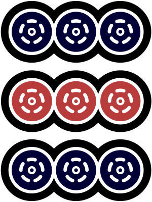
が数巡空けてではなく連続した巡目で手出しされた場合、3トイツの手で孤立したトイツだっただけかもしれない2。例外
いくつかの例外を考慮する必要がある。もっとも、ずんだもんによれば、こうした例外ケースは、河に別の手がかりを残すことが多い。
A. 2枚目は、安全牌として手牌に残されていた。特に、1枚目を切ったあとで2枚目を引いてきた場合。たとえばのターツを払っている途中で、以前切ったをもう1枚引いたとする。安全そうなを残して先にを切り、次の巡にを手出しする、ということが起こる。
B. 2枚目が七対子の種として残されていた。
C. 三色や一通などの役を狙う浮き牌として残されていた。
消去法
これらの手出しのいずれかを見たら、次にやるのは関連牌のパターンをすべて列挙し、可能性が薄いものを消していくことだ。ここが一番大切なプロセスで、これをやらないのならば手出しを見る意味は半減する。たとえば、の間隔切りを見つけたとしよう。2枚目のが切られた時点で考えるべき関連牌のパターンは、次のスクリーンショット（ずんだもんの手出し読み講座第2回より）にまとめられている。
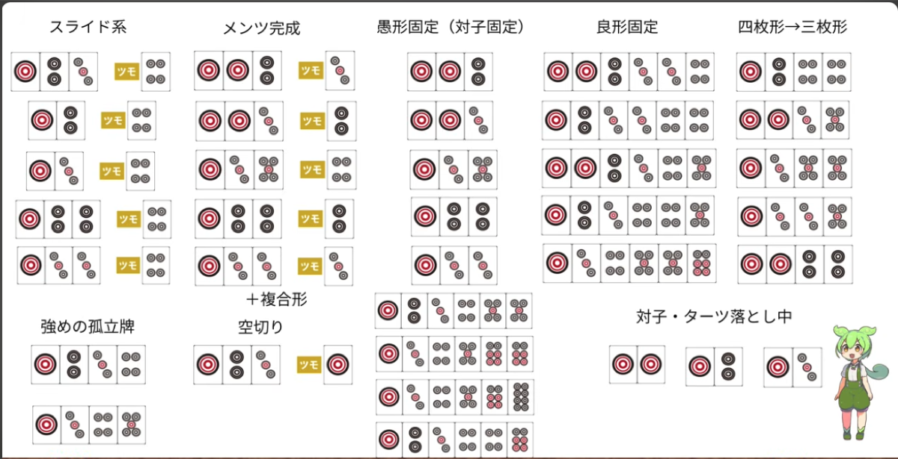
以下に書き出す。
表1. 端牌の間隔切りの関連牌パターン
| # | パターン | 形（金色の枠 = いま引いてきた牌） |
|---|---|---|
| 1 | スライド系・空切り | a 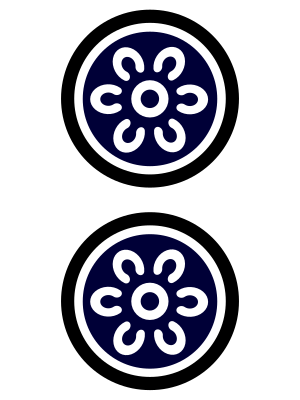 bcdef |
| 2 | メンツ完成 | abc 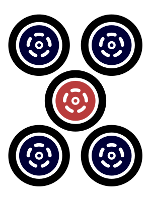 defその他複合型 |
| 3 | 愚形固定（トイツ固定） | abcdefgh 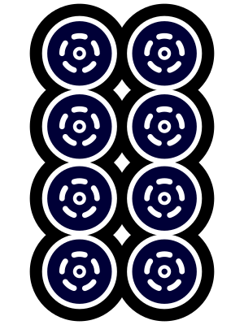 i |
| 4 | 良形固定 | abcde |
| 5 | 4枚形→3枚形 | abcde |
| 6 | 強めの浮き牌 | ab |
| 7 | トイツ・ターツ落とし中 | abc |
数巡前にが1枚切られていたという観測から、これらのパターンの多くを消去したり、割り引いたりできる。
- 2-a、2-b、3-a、3-b、4-a、4-c、5-b、5-e、7-a。いまこの形を持っているなら、数巡前にを切った時点でが暗刻だったことになってしまい、不自然である。
- 1-b、1-c、7-b、7-c は（不可能ではないが）ありそうにない。いまこの形なら、数巡前の時点で愚形ターツ固定をしていたことになる。良形ターツ固定やトイツ固定に比べて、愚形ターツ固定はずっと起こりにくい。
- 5-c、6-b も可能性は低い（11355 や 11345 を壊したことになるので）。
これらを消すと、残る形の多くはかを複数枚含むか、すでに完成したピンズのブロックを含むものになる。残ったパターンのうち–のリャンメン待ちを生むのは 4-b だけ、–のリャンメン待ちを生むのは 4-d だけである。これらの形を作るのに必要な牌（や）が2枚以上場に見えていれば、その可能性はさらに下がる。
2-f（複合型）については、（ここからのトイツを間隔切りすれば–待ちが残る）や （–待ちになる）のような形は、そもそも最初のを切ることがやや不自然なので、可能性は低い。ただし、（–待ちになる）は、あり得る形だ。
「おまけ」の理論
これらのメインの予測に加えて、ずんだもんは「おまけ」の理論として、（）トイツの間隔切りはの愚形待ちをやや起こりにくくする、と論じる。消去のプロセスを経ると、を含むパターンが減り、相対的にやを含むパターンが増える。残ったこれらのパターンは、の（ノベタンではない）純粋タンキ、のシャンポン、のカンチャンとは両立しにくい。
たとえば手にがあり、のシャンポンがあるなら、2枚目のを切った時点の形は だったはずで、その時点でのトイツを固定するのは考えにくい。同様に、とのカンチャンがあるなら、切った時点の形は だったはずで、その段階でカンチャンを固定するのも考えにくい。
手にがある場合も、 や のような形は、単独の愚形待ちではなく–待ちを生む。の愚形待ちが不可能になるわけではないが、理論はその頻度が下がると予測する。
仮説
まとめると、この過程から次の予測が得られる。
- P1. 端牌の間隔切りがあった時、内側1つ目のスジ（2–5）が待ちになる可能性が下がる。理論はこれを2つのうちでより安全な方と位置づける — 理論上可能な複合型を除けば、基本パターンの中で残るのは4-bだけだからだ。
- P2. 内側2つ目のスジ（3–6）も待ちになりにくいはずだが、1つ目ほどではない：1パターン（4-d）に加え、例外的な形（112245）が消去を生き残る。
- P3. 5の愚形待ちの可能性が下がる。
以上は1の間隔切りについての記述で、9の場合は鏡像になる。対応するスジは5–8（内側1つ目）と4–7（内側2つ目）である。
実戦での応用例
ずんだもんは、この理論は攻守両面で役に立つと論じる。最初のスクリーンショット（手出し読み講座第2回より）は、1シャンテンでの難しい押し引きの局面だ。下家のの間隔手出しに気づかなければ、現物のを切って完全に降りるか、無筋の危険牌か を押して1シャンテンを保つかの難しい二択を迫られる。
を押して1シャンテンを保つかの難しい二択を迫られる。
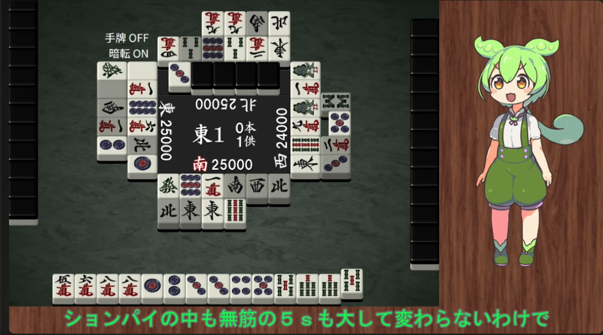
しかし、端牌の間隔トイツ理論を知っているプレイヤーは、もう一つの選択肢としてを選べる。が現物なので–のスジはあり得ない。そしての間隔切りにより–のスジが安全になっている。理論はさらに、のシャンポン・タンキ・カンチャンも比較的起こりにくいと予測する。ずんだもんは、このの危険度は、生牌の程度にまで下がっているとし、を押して1シャンテンを維持することを勧める。
2枚目のスクリーンショットでは、の間隔切りによって–と–の両方の待ちが安全になっている。そこでずんだもんは、 のブロックを払って1シャンテンを維持することを勧める。
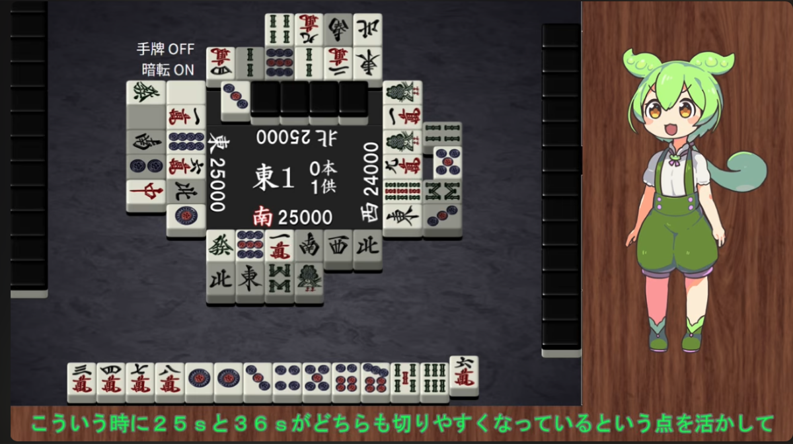
最後のスクリーンショットは、ベタオリしたいのに完全な安全牌がないという局面である。ずんだもんの推奨打牌はなんとドラまたぎかつスジで7枚見えている切りだ。は4枚すべて見えていることで、パターン4-b（ ）が消え、下家が–で待っている可能性は極めて低くなるのだという。
）が消え、下家が–で待っている可能性は極めて低くなるのだという。
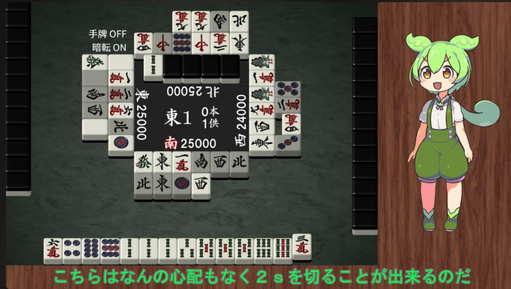
データによる検証
ずんだもんは、端牌の間隔切りに関する理論は、他の手出し読み理論よりも有用性が高いと論じている。逆切りの手出しや、中張牌の間隔切りの場合、それ単体で消去できる関連牌パターンの数がそれほど多くなく、他の情報と組み合わせないと実用レベルの知見を導けない。それに対し、端牌の間隔切りの情報は単体で多くの関連牌パターンを消去できるためだ。ただし、そのぶん間隔切りは残りの2種類より出現頻度がずっと低いのだという。
そこで、この形が実戦でどれほどの頻度で現れるのか、天鳳のデータで確認してみよう。そのついでに、これらの予測がデータに支持されるかどうかも合わせて確かめよう。
理論の観察可能な含意を、二つの段階に分ける。第一段階の予測は、端牌の間隔切りは本物のトイツから切られたものだ、というもの。これは「1枚目を切った時点で2枚目を持っていたか」で検証する。なお、ずんだもん自身が後の補足動画（手出し読み講座第6回）において、第2回講座の講義内容はこの確率を過大に見積もっていたかもしれないと認めている。特に、1枚目と2枚目の間に数牌が何枚も切られている場合、本物のトイツである可能性は下がり、したがって「2枚目の端牌は、手牌の中で関連牌として残されていた」という推論が成り立たなくなる。
第二の段階の予測は、上でボックスにまとめた予測P1〜P3である。
どの予測も、適切な基準値との比較で評価しなければならない。間隔を空けたトイツ落としが出てくるには時間がかかるので、この型の捨て牌を持つプレイヤーのリーチは平均的に遅い。そこで、比較はすべてリーチ巡目を揃えて行う3。
検証結果
データは2015〜2023年と2026年1月〜9月中旬の期間に、天鳳の鳳凰卓で行われたすべての東南戦とする。1,692,981半荘、18,034,322局からなる。2024年と2025年のデータがないのは、天鳳公式ページにおける牌譜ログデータの公開が2026年9月現在停止になっているためだ。
第一段階 — 本当にトイツを持っていたのか
端牌の間隔切りを観測したとき、1枚目を切った時点で本当に両方を持っていた確率はどの程度か。理論は、プレイヤーが最初に端牌をトイツで持っていたという仮定に依存している。この仮定に基づき、t 巡目に1枚を切り、もう1枚を数巡残したのなら、残した1枚は近くのブロックとつながっていたのだろうと推測できる。その推測が、内側のスジは安全だという予測の土台になる。逆に、最初から2枚持っていなかったのなら、近くのブロックが手牌にあると考える理由も、内側のスジが安全だと考える理由もなくなる。
観測された端牌の間隔切りは全体で約327.8万件 — 1,803万局に対して、およそ5〜6局に1件、卓の誰かが切っている計算になる。このうち、本物のトイツだったのは60.6%にとどまる — 約327.8万件中198.6万件である。残りのケースでは、プレイヤーは孤立した端牌をまず切り、後で同じ牌を引き、1巡以上抱えてから手出ししていた。
前述のとおり、近くのブロックとつながっていない端牌の2枚目を抱える例外的な理由はいくつかある。ただし、典型的な国士無双、染め手、七対子の進行では、単独の端牌を一度切ったあと、引き戻して抱えるケースは比較的少ないと考えられる。より重要なのは、安全牌として抱えた可能性である。こちらは河に手がかりが残りにくく、見分けるのが難しい。
幸い、本物のトイツだったケースと相関する、観測可能な特徴がいくつかある。第一は、表2に示す二つの打牌の間隔である。間が1〜4枚なら、およそ4件に3件が本物のトイツだ。間が5〜8枚だと、その割合は3分の1を下回る。もう一つの有用な指標は、間に手出しのブロック落としがあるかどうかである。間が1〜4枚でブロック落としがなければ、本物率は80.8%まで上がる。
表2. 間隔の長さ別の本物率
| 間の枚数 | n | 本物のトイツ | 間にブロック落としなし | 間にブロック落としあり |
|---|---|---|---|---|
| 1–4 | 2,246,866 | 75.5% | 80.8% (1,988,995) | 35.2% (257,871) |
| 5–8 | 724,778 | 32.3% | 42.9% (320,827) | 23.9% (403,951) |
| 9+ | 306,248 | 17.8% | 31.1% (49,635) | 15.2% (256,613) |
間のブロック落としの有無は、間隔が長くなっても有効なシグナルだ。表3のとおり、間隔の長さを問わず全ケースをまとめると、間にブロック落としがない場合の74.6%が本物のトイツだった。一方、ブロック落としがある場合は24〜27%にとどまった。ただし、表2で見たように、ブロック落としがない場合でも、間隔が長くなるほど本物率は下がる。
表3. 間のブロック落とし別の本物率
| 二つの打牌の間に | n | 本物のトイツ |
|---|---|---|
| ブロック落としなし | 2,359,457 | 74.6% |
| ブロック落とし、後に字牌・端牌の手出しあり | 150,818 | 27.0% |
| ブロック落とし、後に何もなし | 767,617 | 24.2% |
第二段階 — 該当する待ちは減っているのか
次に、端牌の間隔切りが、内側のスジ待ちと5の愚形待ちの起こりにくさと相関しているかを調べる。
具体的には、以下の3つの結果を見る。
- 内側1つ目のスジの待ち：1の間隔切りなら2–5、9なら5–8。
- 内側2つ目のスジの待ち：1なら3–6、9なら4–7。
- 5の愚形待ち：タンキ・カンチャン・シャンポン。
処置群（端牌の間隔切りのあるリーチ手）では、内側1つ目のスジが待ちである確率は4.725%、内側2つ目は4.099%、5の愚形は1.319%である。
これらを、いくつかの対照条件での確率と比べる。リスク比を「間隔切り群の確率 ÷ 対照群の確率」と定義すると、理論は3つの結果すべてでリスク比が1を下回ると予測する。結果を表4にまとめた。
表4. 対照群別の待ち率の比
| 対照群 | n | 内側1つ目のスジ (2–5) | 内側2つ目のスジ (3–6) | 5の愚形待ち |
|---|---|---|---|---|
| 他の全てのリーチ | 76,802,181 | 1.22 [1.20, 1.23] | 0.95 [0.93, 0.96] | 0.79 [0.77, 0.81] |
| その端牌が河にない | 53,502,664 | 1.32 [1.30, 1.34] | 1.01 [0.99, 1.02] | 0.81 [0.78, 0.83] |
| 1枚だけ切られている | 20,803,191 | 1.08 [1.06, 1.09] | 0.87 [0.86, 0.88] | 0.77 [0.75, 0.79] |
| 2枚以上、ただし連続の巡のみ | 895,004 | 0.97 [0.96, 0.99] | 0.87 [0.86, 0.88] | 0.75 [0.73, 0.77] |
| 間隔あり、2枚目はツモ切り | 1,498,797 | 1.11 [1.09, 1.13] | 0.79 [0.78, 0.80] | 0.71 [0.69, 0.73] |
| 間隔手出し、他家リーチ後 | 102,525 | 0.99 [0.94, 1.03] | 1.02 [0.98, 1.06] | 0.83 [0.77, 0.89] |
処置群の待ち率を各対照群の待ち率で割った比。リーチ巡（5区分）× 先行リーチ（2値）で Mantel–Haenszel 加重。処置群：n = 367,293、実測値 4.725% / 4.099% / 1.319%。小さい数字は半荘単位のクラスターブートストラップによる95%区間。
内側1つ目のスジ
理論の中心的な予測に反して、内側1つ目のスジの待ちは間隔切りの後に増える。他の全てのリーチと比べ、1のトイツを間隔切りした手が2–5で待っている確率は約22%高い。間隔切り群で4.725%、他のリーチで3.873%。絶対値で0.852ポイントの増加である。
予測どおりの関係が現れるのは、対照群を「端牌のトイツを連続する巡で切ったリーチ手」に限った場合だけである。その狭い比較でなら、間隔切りは約3%の低下と結びつく。しかしこれは、ずんだもんの理論が想定している比較ではないだろう。
したがって、データは理論の最も強い予測を支持しない。主要な比較では、内側1つ目のスジはむしろ危険である。
内側2つ目のスジ
内側2つ目のスジの結果は理論と整合的だが、差は小さい。
他の全てのリーチと比べ、間隔切りのある手が内側2つ目のスジで待つ確率は約5%低い。間隔切り群で4.099%、他のリーチで4.315%。絶対値で0.216ポイントの減少である。
押し引き判断をかなりの高精度で行っているようなプレイヤーにとっては、この程度のわずかな差でも有用な情報なのかもしれない。私の感覚だと、この程度の差が実戦の押し引き判断を左右することはあまり多くなさそうである。
5の愚形待ち
最も大きい差は、5の愚形待ちに関する「おまけの理論」の予測に現れる。間隔切りは、これらの待ちの確率の約20%の低下と結びついている。つまり、ずんだもんが話のついでに提唱していた予測の方が、内側のスジに関する2つの主要な予測よりも強く支持される。
間隔が短いほどシグナルは強い
第一段階の分析は、二つの打牌の間隔が長くなるほど本物のトイツである確率が下がることを示した。表5はその知見を取り込み、第二段階の結果を間隔の長さ別に示す。
表5. 間隔の長さ別の待ち率の比
| 間の枚数 | n | 本物のトイツ | 内側1つ目のスジ | 内側2つ目のスジ | 5の愚形 |
|---|---|---|---|---|---|
| 1–4 | 278,246 | 75.5% | 1.19 [1.17, 1.21] | 0.91 [0.90, 0.93] | 0.79 [0.77, 0.82] |
| 5–8 | 73,678 | 32.3% | 1.26 [1.23, 1.31] | 1.02 [0.99, 1.06] | 0.78 [0.73, 0.83] |
| 9+ | 15,369 | 17.8% | 1.41 [1.31, 1.50] | 1.24 [1.15, 1.32] | 0.85 [0.76, 0.95] |
対照はプール：非該当のリーチ全てに、その行の帯より長い間隔の該当リーチを加えたもの。帯より短い間隔の該当リーチは両群から除く。リーチ巡 × 先行リーチで Mantel–Haenszel 加重。本物率は第一段階から（母集団が違うため n は一致しない）。小さい数字は半荘単位のブートストラップによる95%区間。
結果は予想どおりのパターンに従う。間隔が長くなり本物率が下がるにつれて、結果は理論の予測する方向から外れていく。内側2つ目のスジでは、短い間隔で見られた安全方向の関連が消え、9枚以上では逆に待ちが増えている。内側1つ目のスジも、間隔が長いほど待ちの増加幅が大きい。一方、5の愚形待ちの減少は、5〜8枚まで比較的安定している。
実戦で「本物のトイツ落としだった」と読むには、比較的短い間隔に注目すべきだろう。間が4枚を超えると本物率が急激に下がるため、ずんだもんの提示した消去法をそのまま適用する根拠は弱くなる。間隔が長いケースにも待ちとの統計的な関連は残っており、予測シグナルとして完全に無意味というわけではないが、なぜそうなるのかの機序は不明である。
間が1〜4枚のケースについて、結果は次のようにまとめられる。
- 内側1つ目のスジの待ちは増える：約19%の増加。
- 内側2つ目のスジの待ちは減るが、差は比較的小さい：約9%の減少。
- 5の愚形待ちは減る：約21%の減少。
間隔を短く絞ると、本物のトイツである確率が上がり、内側2つ目のスジでは理論と同じ方向の関連が強まる。一方、内側1つ目のスジと5の愚形待ちについては、短い間隔に限定しても結果は大きく変わらない。
メカニズムを探る
ずんだもんの理論の中心的な予測が外れるのはなぜか。理由の一つは、第一段階の予測が当てにならないことである。間隔切りに見えるものの多くは、1枚目を切ったあとで2枚目を引いた偽物であり、その場合、この捨て牌パターンは1枚目を切った時点の端牌の周りの形について何も語らない。もう一つの理由は、第二段階の消去法のメカニズムが不完全なことである。つまり、本物のトイツを持っていた場合でも、残された端牌は、理論の消去プロセス（表1）が想定するつながりとは別の役割を果たしていたかもしれない。
二つの説明を切り分けるため、本物のトイツがあったケースだけに絞って分析をやり直した。具体的には、処置群を「1枚目を切った時点で2枚目を持っていた」ケースに絞る。守備側は、普通この情報は知り得ない。2枚目の手出しを見ても、1枚目の時点で両方持っていたかどうかは他者からは分からないからだ。したがってこれは、そのまま使える読みの手法ではない。メカニズムを検証するために、もし仮に本物のトイツを完璧に見分けられたなら、理論の予測は成り立つのか。それをテストする。
表6. 理論に最も有利な条件での待ち率の比
| 処置群 | n | 内側1つ目のスジ (2–5) | 内側2つ目のスジ (3–6) | 5の愚形待ち |
|---|---|---|---|---|
| 全ての間隔切り（基本の結果） | 367,293 | 1.22 [1.20, 1.23] | 0.95 [0.93, 0.96] | 0.79 [0.77, 0.81] |
| 間を1〜4枚に限定 | 278,246 | 1.19 [1.17, 1.21] | 0.91 [0.90, 0.93] | 0.79 [0.77, 0.82] |
| 本物のトイツだった | 239,432 | 1.13 [1.11, 1.15] | 0.82 [0.80, 0.84] | 0.76 [0.73, 0.79] |
| 偽物だった（後から引き直した） | 127,861 | 1.37 [1.34, 1.40] | 1.18 [1.16, 1.21] | 0.85 [0.81, 0.88] |
いずれも対プール、リーチ巡 × 先行リーチで Mantel–Haenszel 加重。間を絞った行では、間5枚以上の該当リーチを対照に編入。本物/偽物の行の対照は非該当リーチのみで、逆側の群はどちらの側にも入れない。小さい数字は半荘単位のブートストラップによる95%区間。
この、実戦では利用できない完全情報を用いた分析でも、内側1つ目のスジは危険なままである。したがって、中心的な予測の失敗を、観測される間隔切りと本物のトイツの対応の不完全さだけに帰することはできない。むしろ結果が示唆するのは、理論の消去プロセスが不完全だということだ。間隔切りが本物のトイツから来ている場合でさえ、内側1つ目のスジを全体として安全にしない程度には、別の手の発展経路が存在する。
その別経路を理解するため、本物の端牌トイツから始まり、1枚を切り、もう1枚を数巡残し、最終的に内側1つ目のスジで待ってリーチした天鳳の牌譜を十数件確認してみた。いくつか目についた例を挙げてみよう。
- の形からを1枚切った。6ブロック目の候補としてを浮き牌として持つためのスペースを空けたということのようだ。後にを引き、残りのを切って、最終的に
 –待ちになった。
–待ちになった。 - トイツを他に2つ持った手で、からを切った。切りが受け入れ最大で、牌効率上の正着である。を引いて2枚目のを切り、最終的に–待ちでリーチした。
- 123の三色の可能性を残すため、からを1枚切った。他のターツが三色を支えられなくなったあと、を引いて残りのを切り、–待ちになった。
- からを切り、のリャンカンを残した。その後を引いて残りのを切った。別のブロックが完成したあと、を切ってリーチし、–待ちとなった。
- トイツは3つあるが、ブロック数が足りていない手において、の形からを1枚切り、もう1枚を浮き牌として数巡残した。は特に強い浮き牌ではないが、他の選択肢よりはましだった。
これらの例が示唆するのは、消去法の過程でいくつかの可能性を過小評価していたことだ。1シャンテンや2シャンテンの手でのようなブロックからを1枚切って愚形ターツを固定する、三色などの手役を追って愚形固定する、あるいは他にましな選択肢がないという理由で端牌を浮き牌として抱える、といった経路である。
これらは、集計結果を生み出している可能性のある経路の具体例である。十数件の確認だけでは各経路の頻度までは分からないが、少なくとも、理論の消去プロセスに含まれていない現実的な発展経路が複数存在することは確認できた。
まとめ
この分析は、ずんだもんの理論の妥当性を検証するためというよりは、その実用可能性を確認するために始めたものだった。結果は予想より込み入っていた。ずんだもんが最も信頼できるとする予測 — 内側1つ目のスジの相対的な安全性 — が、最も支持されなかった。逆に、内側1つ目のスジは、隣の端牌トイツの間隔切りの後にはむしろ危険となるようだ。
内側2つ目のスジに関する予測は当たっていた。このスジの待ちは実際に減っていて、二つの打牌の間隔が短いときには、差分もより大きい。ただし、主分析における差は約5%であり、絶対値では0.216ポイントにとどまる。
最も強い証拠は、5の愚形待ちが減るという「おまけ」の予測に関するものだった。この結果は、5がらみのリャンメン待ちがないと分かっている場面では実戦的な価値を持ちうる。たとえば、のトイツを間隔手出しした相手がリーチし、がその相手への現物だとしよう。–のリャンメン待ちがなくなるので、に残る危険は–と愚形待ちだけだが、間隔トイツ理論によりの愚形待ちは出にくくなっている。自分の手牌がとのどちらかを切ればテンパイという状況ならば、切りが有力な候補になる。
ずんだもんのMリーグ解説や手出し読み講座が教材として非常に価値があるという考えは変わらない。Mリーグ辛口解説第48回でずんだもん自身が語るように、ありうる手牌のパターンを列挙し、証拠と矛盾するものを消したり、確率の濃淡をつけていったりする作業は、それ自体が貴重なトレーニングになりそうだ。「理論」として単純化した予測のいくつかが統計的に成り立たなくても、その論理をたどることは、手がどう伸びていくかの理解を深めることにつながるだろう。
最後に、私の分析は、なんらかの重要な前提条件や境界条件などを見落としているかもしれないし、ずんだもんの理論のどこかを誤解しているかもしれない。ここで使った操作的な定義、対照群、サンプルの絞り方は、予測を検証する一つのやり方にすぎない。他の麻雀研究者の皆さんが追試を行い、同じ結論に達するかどうかを確かめてくれたら嬉しい。私の結論が間違っていてずんだもんの理論が正しいと判明したら、その方がむしろ嬉しいまである。
手法
処置の定義
同一プレイヤーが同じ端牌（1か9）を、間に1枚以上の打牌を挟んで2回以上切り、2枚目が手出しで、2枚目より前に他家のリーチがないもの。
待ちの分類
手牌を分解して待ちごとの形を判定する。2–5待ちには 2345 のノベタン、34567 の三面張、3444 なども含み、2と5のシャンポンは含まない。5のタンキは5の愚形に数える。
層別
すべての比は、リーチ巡（5区分）× 他家の先行リーチ（2値）の10層で Mantel–Haenszel 加重。区間は、半荘を単位にリサンプルするクラスターブートストラップの2.5〜97.5パーセンタイル（表4は400回、表5・6は300回）。
ブロック落とし
二つの端牌打牌の厳密に間にある二つの打牌がどちらも手出しで、同一牌（トイツ）か、同色で1つまたは2つ離れた牌（ターツ）を構成するもの。二つの打牌が連続した巡である必要はない。
多重検定
探索的な分析なので、調整はしていない。区間は名目上の95%である。
限界
これは観察データの比較であって、実験ではない。層別しているのはリーチ巡と先行リーチだけで、群間の他の違いは残る。また測っているのは「その手がどの待ちで終わったか」であって、「特定の牌が当たるか」ではない — 実際の放銃率とは関連するが別の量である。
- ずんだもんを名乗ってMリーグの解説をする、他のチャンネルも後追いで登場してきた。M斬るチャンネルこそが元祖であり、たとえば「本物の雀ゴロずんだもん」を名乗っている方と混同しないようにしたい。 ↩
- 間隔トイツのシグナルは、間に挟まれた牌も手出しだったときにより信頼がおける。したがって、できれば間の牌が手出しかどうかも覚えておいた方が良いという。 ↩
- リーチ巡だけを揃えても、二つの群が完全に比較可能になるとは限らない。間隔切りは、手のスピード、プレイヤーの強さ、点数状況、見えている牌の枚数、手の出発点の形などとも結びついているかもしれない。目的が因果推論ではなく予測なので、これらの違いは必ずしもバイアスではない。一部は、捨て牌パターンが運ぶ情報そのものでもある。ただし、間隔切りそのものの予測への寄与を切り出したい、という狭い目的にとっては問題になる。 ↩
Comments